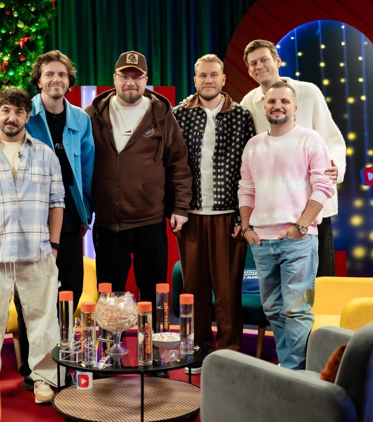
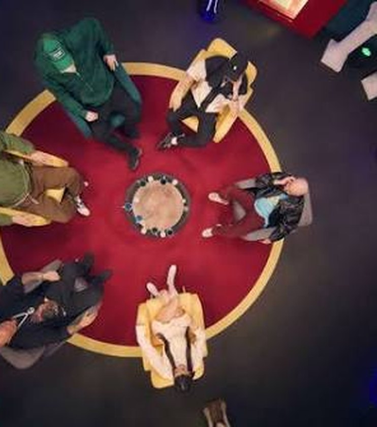
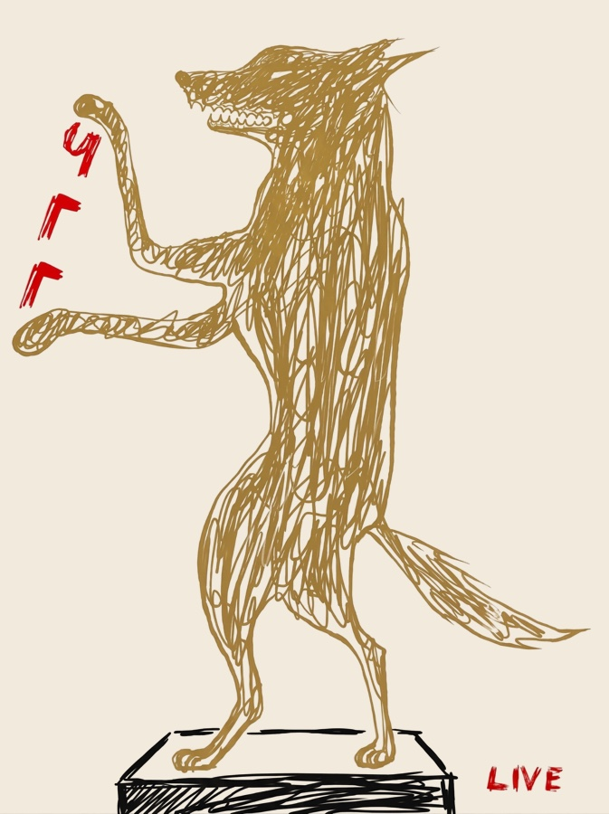

ЧГГ Live
Гарик Харламов
«Доброго времени суток. В моём случае — любого, кроме утра. Шесть лет вы смеялись вместе со мной и ругали комиков за тупые ответы. Теперь можете сыграть сами. А если захотите — сяду с вами за один стол. Если не просплю».
Господин Академик
«Сразу вопрос. Что будет, если шоу, которое мы втроём делаем шесть лет, станет доступно каждому? Досрочный ответ: ЧГГ-Live. Вопросы пишу я. Лица кислые, как при просмотре телеканала „Культура“, не допускаются».
Господин Ведущий · голос сверху
«Здравствуйте, уважаемые знатоки. Да, я не ошибся. Я долго думал, господин Академик делал расчёты, а Гарик просто кивнул. Теперь каждый из вас может стать полноправным участником клуба ЧГГ».
Шесть лет его никто не видел. На вашей игре тоже не увидит.
Вечер в трёх актах. Антракт с комиком.
Не проклинать свою команду, как в обычном квизе, а хорошо провести вечер. Правила понятны всем. Даже Джигану — он у нас был. [Правила кратко]
Акт I
Квиз от Академика
От трёх до шести туров с разными механиками. Весело, но на логику. Первые пять минут все уверены, что знают ответ.
Антракт
Комики шоу
Стендап и музыкальные номера между турами. Команды делают вид, что не спорят о прошлом вопросе.
Акт II
Финал как в шоу
Игра до шести очков с Господином Ведущим. За ваш стол садится звезда и начинает подсказывать. Иногда правильно.



Кадры из студии шоу
Куда приедет стол
Приглашение{{t.n}}
{{t.title}}
{{t.text}}
{{t.meta}}{{t.badge}}
Сезон ЧГГ-Live
Из вашего зала — в настоящий выпуск
Команды, которые лучше всех сыграют сезон, приедут в студию и сыграют в специальном выпуске шоу. С камерами, звёздами и голосом сверху. [правила рейтинга и сроки]

А победителям вечера — Волк.
Нелепый, в бабочке, навсегда.
Нелепый, в бабочке, навсегда.
Новая партия
Стол готов. Не хватает игроков.
Расскажите про повод и площадку. Мы предложим состав звёзд, комплектацию вечера и пару вопросов лично про вас.
Или напишите: [телефон · Telegram · почта]